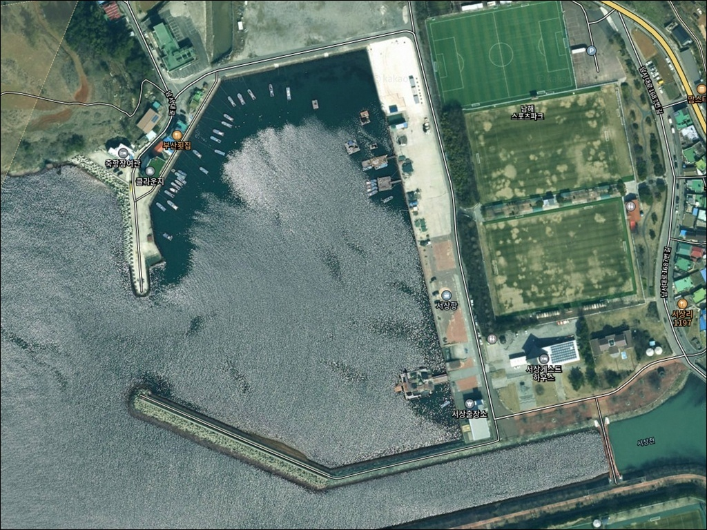
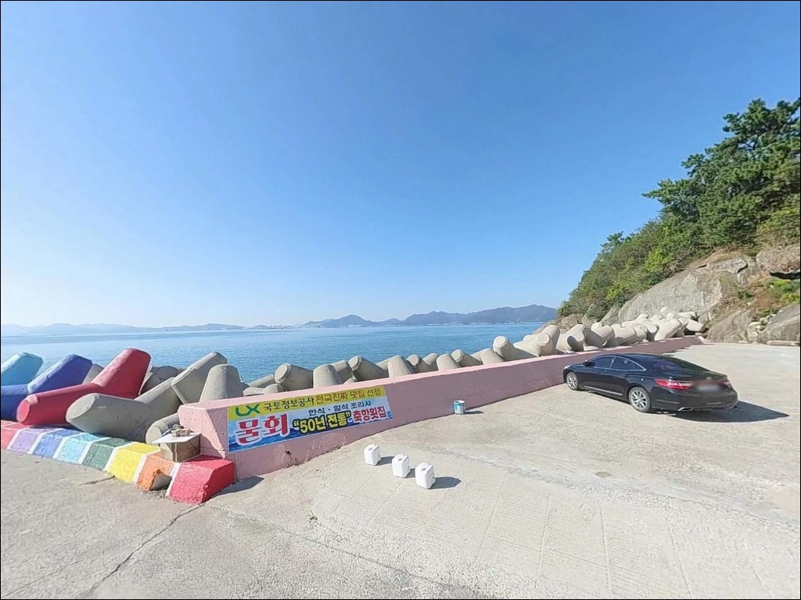
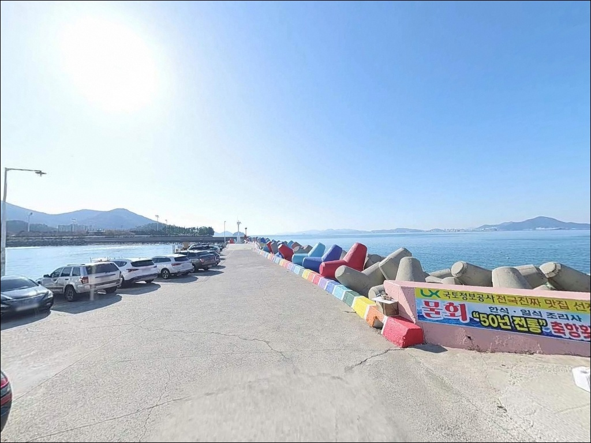
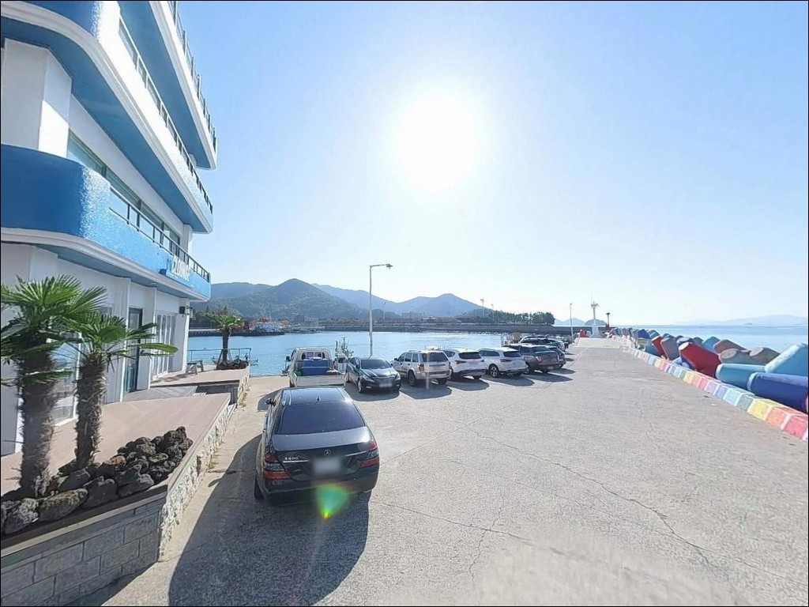
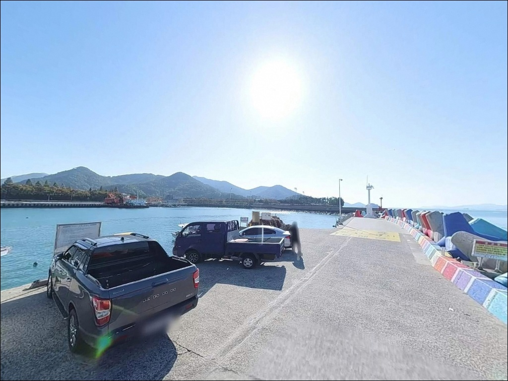
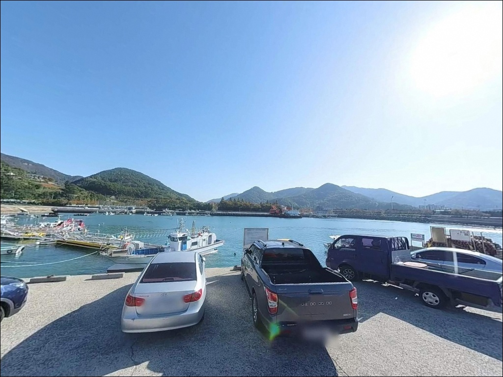
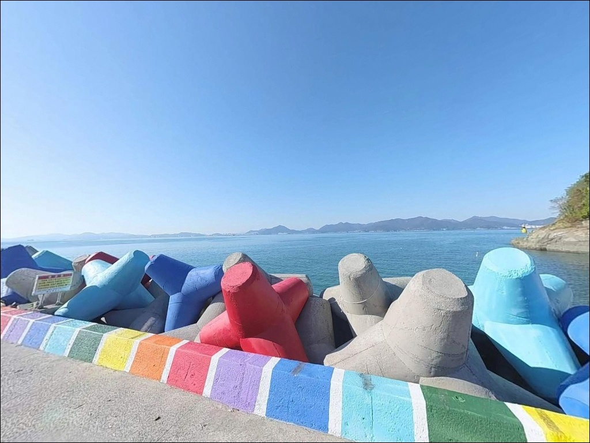
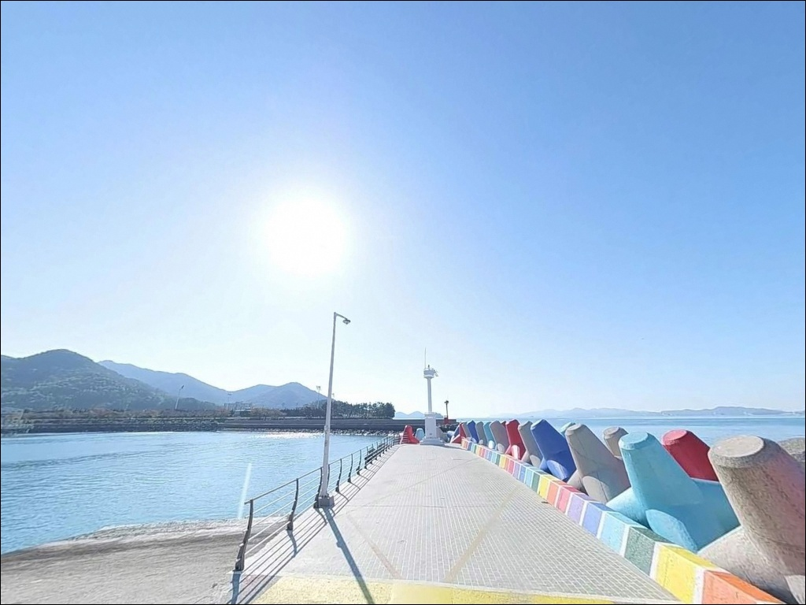
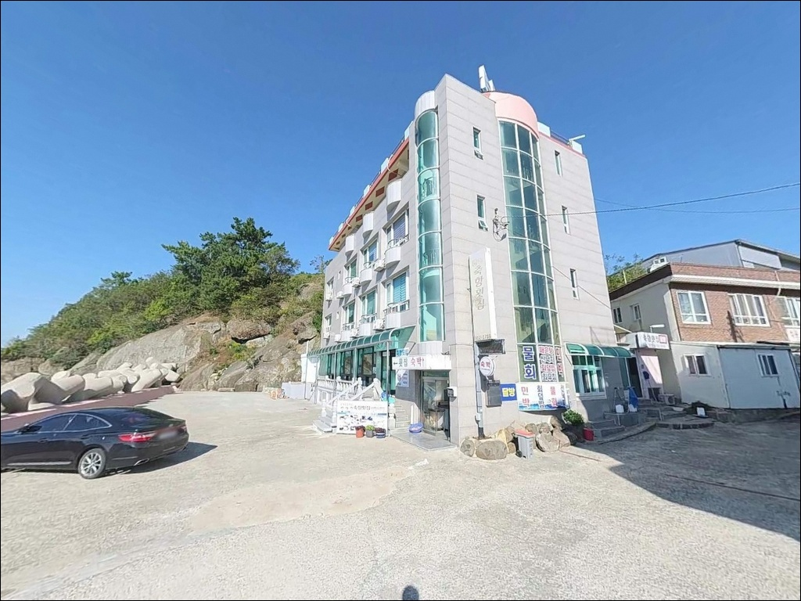

이 페이지에는 광고(제휴 링크 포함)가 있으며, 광고 링크를 통해 구매하면 운영자가 판매 수익 또는 수수료를 받을 수 있습니다. 포인트 사진: 카카오맵 스카이뷰·로드뷰. 이 페이지의 지도·사진 이미지는 카카오맵의 실제 서비스 이미지와 다를 수 있습니다.

서상항(서상방파제)
경남 남해군 서면 서상리 1316-5
사리 전후 서상항 외항 끝단에서
채비를 던지면 조류에 밀려
중층 이하를 제대로 탐색하기 어렵습니다.
창조류·낙조류 모두 1.8kn 수준의 조류 유속이
방파제 끝단을 직격하는 구조입니다.
이 포인트에서 조과를 기대하려면
물때 판단이 자리 선택보다 먼저입니다.
이 글은
서상항 방파제의 진입 동선과 주차 여건,
차박 환경, 지형 기반 낚시 여건,
낚시 방식별 공략 조건에 집중합니다.
조황 단정이나 특정 어종 보장은
이 글의 범위에 포함되지 않습니다.

서상항은 남해군 서면 소재지와
바로 인접한 지방어항이라
항구 내부까지 왕복 2차선 포장도로가
끊김 없이 연결됩니다.
대형 SUV나 캠핑카도 진입 과정에서
별다른 제약이 없으며,
항 내부 회차 공간도 충분히 확보되어 있습니다.
주차는 두 가지 방식으로 운용됩니다.
여객선터미널 앞 대형 주차장이
공간이 가장 넓고 쾌적하며,
낚시 자리와 밀착해서 차를 세우고 싶다면
남방파제 시작점 인근 물양장 평탄면을
우선 확인하는 편이 좋습니다.
항 내부는 실제 어업 활동이 이루어지는 공간입니다.
어선 통행 동선을 막지 않는 자리에 주차하는 것이
기본 매너이며,
특히 이른 새벽 어선 출항 시간대에는
접안 구역과 통행 동선을
미리 확인해 두는 것이 좋습니다.

서상항은 어항 관리 시설과 터미널 주변으로
가로등이 잘 정비되어 있어
야간 시야 확보가 안정적입니다.
방파제 입구 주변은 밝고 안전한 느낌을 주며,
끝단 방향으로 걸어갈수록
조용하고 고요한 분위기로 바뀝니다.
서상마을이 항 북측과 동측을 감싸는 구조라
민가에서 발생하는 기본 조명이 있고,
어선 출입 관련 불빛도 일부 가동됩니다.
도심 수준의 조명 환경은 아니지만
차박 프라이버시는 비교적 양호한 편입니다.
외항 측은 가을~겨울 북서풍 영향을
직접 받는 구조입니다.
장기 차박이 목적이라면 바람 방향과 세기를
출발 전에 반드시 확인하고,
내항 쪽으로 차량을 돌려
바람막이 위치를 잡는 것이 유리합니다.

서상항은 남해 서면에서 가장 인프라가
잘 갖춰진 포인트 중 하나입니다.
항 바로 앞에 CU 편의점과 식당, 카페가 밀집해 있어
출발 전 보급이나 귀항 후 식사 모두
현장에서 즉시 해결되는 구조입니다.
반경 1km 이내에 병원, 약국, 소규모 마트가 있으며,
서면면사무소 방향으로 나가면
농협 하나로마트와 우체국도 이용할 수 있습니다.
서상숲&하버스퀘어 산책로가 항 남쪽으로 이어져
낚시 외 여유 시간을 보내기에도
나쁘지 않은 환경입니다.
남해스포츠파크가 인접해 있어
주변 산책로 정비가 잘 되어 있으며,
서상 워케이션 센터와 게스트하우스 등
숙박 시설도 가까이 있어
차박 대신 투숙으로 전환하는 옵션도
현실적으로 활용 가능합니다.

서상항 방문에서 가장 먼저 확인할 것은
물때입니다.
창조류·낙조류 유속이 각각 1.8kn 수준으로,
사리 전후에는 방파제 끝단에서 어떤 채비를 써도
흐름을 버티기 어려운 상황이 만들어집니다.
바다타임에서 서면 기준 물때를 확인하고
조금 전후 또는 정조 타이밍을
기준으로 출발 시각을 맞추는 것이 기본입니다.
외항은 여수반도 앞바다 방향으로 직접 노출된 구조라
파도와 너울 영향을 받는 날이 있습니다.
기상청 파고 예보를 출발 당일 아침 다시 한번 확인하고,
테트라포트 구간 이동 시에는
낚시화(스파이크 부착) 착용이 기본입니다.
방파제 끝단 일부 구간에는 난간이 없습니다.
야간 진입 시 헤드랜턴과 보조 조명을 반드시 챙기고,
구명조끼는 방파제에 올라서는 순간부터
착용 상태를 유지하는 것이 안전 기준입니다.
낚시 후 남은 밑밥과 쓰레기는
종량제 봉투에 담아 되가져오는 것이 매너입니다.

서상항은 1972년 지방어항으로 지정된 곳으로,
방파제 총 길이는 270m입니다.
방파제 외항 측에는 테트라포트가 설치되어 있으며,
내항은 석축과 콘크리트 직벽 구조로
내항과 외항이 명확하게 분리됩니다.
방파제 끝단 외항 기준 수심은
7~10m 내외의 깊은 구간이 형성됩니다.
저질은 암반 구조이며,
항 입구 수로 쪽은 준설이 이루어져
사질과 여밭이 혼합된 바닥 환경입니다.
방파제 중간 외항 측은 조류 영향권으로
중층 이하 공략이 유효하고,
브레이크 라인이 완만하게 형성되는
캐스팅 착지 구간을 의식해야 합니다.
여수반도와 남해도 사이의 해협형 지형이라
조류 소통이 꾸준히 발생합니다.
방파제 끝단에서 수심이 급변하는 구간과
항 입구 수로가 회유성 어종이 머무는
주요 포인트 자리입니다.
출조 전에 서상항 일대 최신 조황을
검색해 보시는 편이 좋습니다.

서상항에서 가장 입증된 방식은
방파제 끝단과 외항 테트라포트 구간에서의
찌낚시입니다.
릴찌낚시(구멍찌 채비)로 조류를 타고
채비를 흘리는 방식이 이 포인트 지형에
가장 잘 맞습니다.
가을과 초겨울이 찌낚시 활성도가 높은 시기로
알려진 해역입니다.
원투낚시는 외항 쪽 장거리 캐스팅이 유효합니다.
발판이 평탄해 거치대 설치가 용이하며,
항 전면의 모래·여 혼합 바닥 구간에
채비를 안착시키면
바닥 어종 탐색이 안정적으로 이루어집니다.
에깅은 외항 수심이 확보된 구간과
방파제 전면 테트라 쪽을 중심으로 활용합니다.
야간에는 내항 가로등 주변에서
볼락 루어 낚시도 노려볼 수 있는 구조이며,
볼락 라이트게임은 소형 지그헤드 채비로
방파제 석축 경계선을 천천히 탐색하는
방식이 어울립니다.

서상항 조류가 너무 강하거나
파도 여건이 맞지 않을 때는
홍현 방파제가 첫 번째 대안입니다.
서면 해안선에서 서상항에서 5~7km 거리로
동일 해역 조건의 방파제 포인트이며,
바람 방향에 따라 선택 이동이 가능한 구간입니다.
북쪽 방향으로 5분 거리의
장항방파제도 유력한 대안입니다.
숲이 인접해 있어 바람 차단 여건이 상대적으로 좋고,
감성돔 포인트로 인지도가 있는 곳입니다.
차박 여건이 서상항보다 조용한 편이라
장기 체류 목적이라면 더 유리한 선택이 됩니다.
평산항도 서면 해안선 방향으로
낚시 포인트 병행 탐색이 가능한 항구입니다.
서상항을 기점으로 잡고 주변 포인트를
순서대로 탐색하는 동선이
이 권역에서 가장 효율적인 이동 루트입니다.

방파제 찌낚시나 에깅을 즐기는 낚시인이라면
270m 외항 방파제와 7~10m 수심의 끝단 구간은
이 해역에서 실전 투입이 가능한 조건을
충분히 갖춘 포인트입니다.
인프라 부담이 거의 없고
진입과 주차도 안정적이라,
체력과 장비를 낚시 자체에 집중할 수 있는
구조이기도 합니다.
반면 사리 전후 물때를 확인하지 않고 방문하면
외항 끝단에서의 채비 운용이
사실상 불가능해지는 상황을 맞닥뜨릴 수 있습니다.
물때 확인, 파고 예보, 테트라 전용 신발,
이 세 가지가 서상항 방문의
기본 체크 조건입니다.
편의시설이 바로 앞에 갖춰진 어항에서
물골 조류 옆 방파제에 자리를 잡고
낚시와 차박을 함께 즐기고 싶은 낚시인이라면,
서상항은 남해 서면에서
가장 부담 없이 시작할 수 있는 출조지입니다.